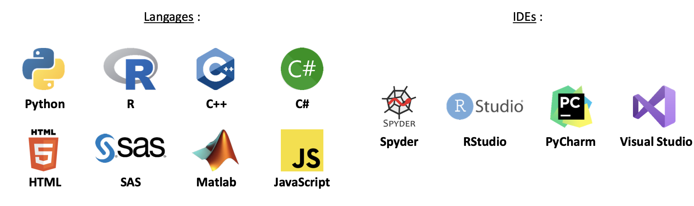
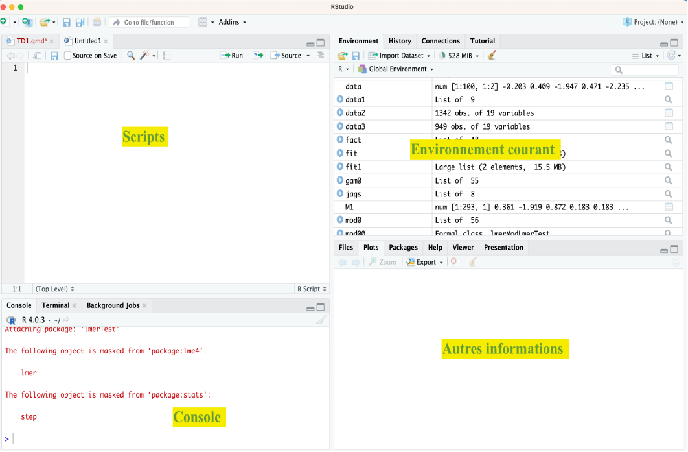
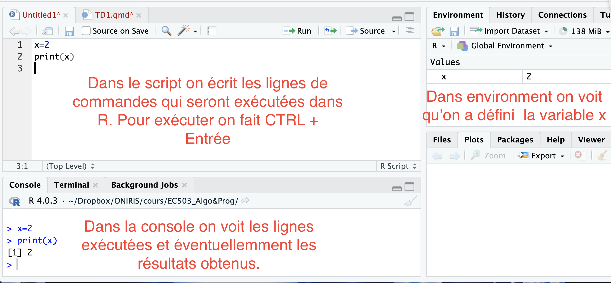

x<-2
print(x)
mode(x)
## Supprimer x
rm(x)Modalités d’évaluations
En deux parties :
Projet réalisé en binôme (50%)
Evaluation écrite individuelle (50%)
Objectifs de l’EC
Pouvoir à partir d’un problème donné :
Descrire des données et des informations disponibles. Positionnement du ou des problème(s) et définition de la ou des méthode(s) à employer pour le/les résoudre. \(\leadsto\) Analyse
Ecrire, en langage de description, des objets et de la suite d’instructions et d’opérations à effectuer pour résoudre le ou les problème(s) posé(s). On utilise une méthode de décompositions successives : l’ensemble du traitement est décomposé en séquences d’étapes élémentaires. \(\leadsto\) Algorithmique
Coder l’algorithme pour qu’il soit compris par l’ordinateur. Programmation
Intérêts de la programmation pour un ingénieur
Résoudre des tâches parfois longues et fastidieuses pour un humain,
Eviter les erreurs,
Prendre des décisions rapidement,
….
Enjeu sociétal majeur (Intelligence Artificielle)
…
Langage et IDEs
Langage de programmation : formuler des algorithmes et produire des programmes informatiques qui les appliquent. Il est basé sur un alphabet, un vocabulaire, des règles de grammaire, …
IDE : Acronyme pour « Integrated Development Environment ». Logiciel qui fournit des installations complètes aux programmeurs informatiques pour le développement de programmes informatiques.
Exemples

Installer R et RStudio
A l’adresse : https://posit.co/download/rstudio-desktop/
R et RStudio sont multiplateformes (Windows et Mac OSX)
Utiliser RStudio :

Les variables
Une variable est un objet référencé dans le programme qui associe un identificateur à une valeur d’un certain type.
- L’identificateur est le nom de la variable utilisé pour l’appeler,
- La valeur est ce que contient la variable,
- Le type est l’ensemble dans lequel la variable prend sa valeur.
Du côté de R :
Pour définir une variable et lui affecter une valeur on peut soit utiliser = ou <-

Les variables contenant des caractères (on utilise ““)
x<-"bonjour"
print(x)
mode(x)Les variables contenant des booléens (vrai ou faux)
x<-TRUE
print(x)
mode(x)Calculs de base sur variables numériques :
- Définir une variable x ayant pour valeur 2. Exécuter x + 5. Quel résultat s’affiche ? Est-ce logique ?
Voir la correction
x<-2
x+5- Effectuer les calculs suivants : \(x+41.2, x-5, x* 4, x/4, x/3, x* 3.61, x** 3,\) et \(x^5\). A quoi correspondent les opérateurs ** et ^ ?
Voir la correction
x+41.2
x+5
x*4
x/4
x/3
x*3.61
x**3
x^5- Définir une variable y ayant pour valeur 5. Effectuer les calculs \(x+y\), \(x*y\) \(x/y\), \(x**y\) et \(x^y\). Les résultats sont-ils logiques ?
Voir la correction
y<-5
x+y
x*y
x/y
x**y
x^y- Exécuter \(y1\)=“3”. Exécuter print(\(y\)) et print(\(y1\)). A-t-on une différence au niveau des résultats ? Effectuer l’opération \(y+y1\). Que se passe-t-il ? Pourquoi ? Quelle fonction de R permet de comprendre d’où vient l’erreur ?
Voir la correction
y1<-"3"
print(y)
print(y1)
y+y1
class(y1)Manipulation de variables de type caractère :
Définir \(x=3\) et \(y=4\).
- On veut écrire la phrase “La valeur de \(x\) est égale à [valeur de x]”. Pour ce faire on utilise la fonction paste
paste("La valeur de x est égale à",x)En utilisant une approche similaire écrire la phrase :
“La division de [valeur de x] par [valeur de y] vaut [valeur de x/y]”
Voir la correction
paste("La division de ",x,"par",y,"vaut",x/y)- Concaténation : on affecte la valeur “Hello” à la variable x et “World” à la variable y. Définir à partir de x et de y la variable z contenant “Hello World”.
Voir la correction
z<-paste(x,y)Manipulation de variable de type booléen :
- Affecter la valeur TRUE à x et à y. Réaliser les opérations x | y et x & y. Peut on faire x+y et x*y ?
Voir la correction
x<-TRUE
y<-TRUE
x | y
x & y
x+y
x*y
# TRUE est remplacée par 1.- Reprendre les commandes précédentes avec
x<-TRUE, y<-FALSE
x<-FALSE, y<-TRUE
x<-FALSE, y<-FALSE
Quels sont les résultats et que représentent les opérateurs &, | ?
Génération de nombres aléatoires
Définir une variable x contenant un nombre réel choisi au hasard dans \([-10,10]\) (fonction runif dans R)
Voir la correction
x=runif(1,-10,10)- Définir la variable \(y\) contenant la valeur de \(x+2.\)
Voir la correction
y<-x+2- Définir une variable \(z\) de type logique qui vaut TRUE si \(y\geq 0.\)
Voir la correction
z<-(y>0)Les vecteurs
- On les définit avec c() qui veut dire combine.
- Attention un vecteur doit contenir des valeurs de même nature :
# Vecteur numérique
c(1,1.2,pi)
# Vecteur de caractères
c("Hello","World")
# Vecteur de booléens
c(TRUE,FALSE, TRUE)Classe et taille d’un vecteur
Deux paramètres caractérisent un vecteur : sa taille length et sa classe class
x<-c(1,2,4)
length(x)
class(x)Position d’un élément dans un vecteur
Les éléments d’un vecteurs sont repérés par une position []
x[1]
x[c(1,3)]
x[1:3]Opération sur les vecteurs
Somme, différence, produit, … pour des vecteurs numériques (Attention au problème de taille)
Opérateurs logiques & | pour les vecteurs de type booléen.
Vecteurs numériques :
- Créer deux vecteurs x et y de taille 10 dont les valeurs sont comprises dans \([1,10]\) (on utilisera la fonction runif, on regardera dans l’aide grâce à ?runif)
Voir la correction
x<-runif(10,1,10)
y<-runif(10,1,10)- Donner la cinquième valeur de x, les deuxième, quatrième et septième valeur de y.
Voir la correction
x[5]
y[c(2,4,7)]- Calculer \(x+y\), \(x*y\), \(x/y\) et \(\log(x)\). Comment sont réalisées ces opérations ?
Voir la correction
x+y
x*y
x/y
log(x)- Soit z un nouveau vecteur dont toutes les valeurs sont égales à celles de y sauf la cinquième qui vaut 0.
- Créer le vecteur z.
Voir la correction
z<-y
z[5]<-0- Calculer y/z et log(z). Que constatez-vous ? Pourquoi obtient-on ces résultats ?
Voir la correction
y/z
log(z)Vecteur de caractères
- Créer le vecteur x contenant le nom des villes suivantes Nantes, Brest, Rennes, Angers, Le Mans
Voir la correction
x<-c("Nantes", "Brest", "Rennes", "Angers","Le Mans")- Afficher le premier élément de x
Voir la correction
x[1]- Afficher tous les éléments de x sauf le premier
Voir la correction
x[-1]- Afficher les trois premiers éléments de x.
Voir la correction
x[1:3]- Afficher le deuxième et le quatrième élément de x.
Voir la correction
x[c(2,4)]- Classer les éléments de x dans l’ordre alphabétique puis anti-alphabétique grâce aux fonctions sort et rev.
Voir la correction
sort(x)
rev(sort(x))Définition de vecteur à l’aide des fonctions rep et seq
rep permet d’écrire n fois la valeur a : rep(a,n)
Par exemple créer un vecteur : - 10 fois le nombre 5, - avec 5 fois fille et 10 fois garçon.
rep(5,10)
rep("fille",10)- seq définit une séquence de nombre entre MIN et MAX avec un pas de L : seq(MIN,MAX,by=L)
Par exemple créer une séquence entre 0 et 1 de pas 0.1 ou une séquence entre 10 et 20 de pas 5.
seq(0,1,by=0.1)
seq(10,20,by=5)Exercice 1. Créer un vecteur \(y\) contenant les entiers pairs inférieurs à 100 grâce à la fonction seq.
Voir la correction
y<-seq(2,100,by=2)- Ajouter à y les entiers impairs inférieurs à 100. On stockera la valeur obtenue dans une variable \(S\).
Voir la correction
z<-seq(1,100,2)
S<-y+z- Déterminer la taille du vecteur \(S\) final.
Voir la correction
length(x)- A l’aide de la fonction rep créer un vecteur sonnette contenant 4 fois « ding » puis 4 fois « dong ».
Voir la correction
sonette<-c(rep("ding",4),rep("dong",4))Opérations sur des vecteurs booléens
- Créer x contenant TRUE, TRUE, FALSE, FALSE et y contenant TRUE, FALSE, TRUE, FALSE. On utilisera la fonction rep.
Voir la correction
x<-c(rep(T,2),rep(F,2))
y<-rep(c(T,F),2)- Faire les opérations suivantes : \(x | y\), \(x \& y\), \(x+y\), \(x*y\). Que retouve-t-on ?
Voir la correction
x|y
x&y
x+y
x*yLa fonction sample
Cette fonction permet de tirer aléatoirement size=\(n\) valeurs dans un vecteurs \(x\) avec (ou sans) remise replace=TRUE. Voir l’aide grâce à ?sample Exemple
A l’aide de la fonction sample on crée un vecteur melodie contenant une succession aléatoire de « ding » et de « dong » de taille 100.
Voir la correction
melodie<-sample(c("ding","dong"),100,replace=T)Grâce à la fonction table, on détermine combien il y a de « ding » et combien il y a de « dong » dans melodie.
Voir la correction
table(melodie)Autre exemple : on crée un vecteurs de 40 valeurs aléatoires dans \([-20,20].\)
Voir la correction
x=sample(-20:20,40,T)On veut savoir combien de valeurs de x sont postives.
Voir la correction
sum(x>0)La fonction which
Cette fonction permet de savoir dans un vecteur les coordonnées de \(x\) qui répondent à un certain critère.
Exemple : Quelles sont les positions de ces valeurs ?
Voir la correction
which(x>0)Quels sont les indices des valeurs supérieure à 5 ou inférieure à 0 ?
Voir la correction
which(x>5 | x<0)Quels sont les indices des valeurs dans [5,10] ?
Voir la correction
which(x>=5 & x<=10)Exercice de synthèse
PARTIE 1 :
- Générer un vecteur \(x\) de taille 100 de valeurs tirées selon une loi normale centrée réduite (ie de paramètre 0 et 1) grâce à la fonction rnorm.
Voir la correction
x<-rnorm(100)- Calculer la somme et la moyenne de x à l’aide des fonctions dédiées.
Voir la correction
sum(x)
mean(x)- Calculer le minimum, le premier quartile, la médiane, le troisième quartile et le maximum de \(x\). La fonction quantile bien utilisée vous donnera toutes ces informations directement…
Voir la correction
quantile(x)- Générer le vecteur booléen indiquant si les nombres contenus dans \(x\) sont positifs (TRUE) ou non (FALSE).
Voir la correction
y<-(x>0)- Même question pour indiquer les nombres sont compris entre -1 et 1.
Voir la correction
(x< -1)|(x>1)- Afficher les indices des valeurs négatives de x.
Voir la correction
which(x<0)- Afficher la valeur absolue de \(x\).
Voir la correction
abs(x)- Afficher la partie entière des valeurs de x (fonction floor).
Voir la correction
floor(x)- Afficher uniquement les valeurs positives de x.
Voir la correction
x[x>0]- Remplacer les valeurs négatives de x par 0. Vérifier le remplacement.
Voir la correction
x[x>0]<-0
xPARTIE 2 :
- Créer un vecteur nommé \(a\) de taille 200 tiré aléatoirement dans une loi normale de moyenne 10 et d’écart type 2.
Voir la correction
a<-rnorm(200,10,2)- Donner la moyenne \(\bar a\) de \(a\) (fonction mean) et l’écart type \(s_a\) de \(a\) (fonction sd). Calculer \(a_1=\bar a-2s_a\) et \(a_2=\bar a+2s_a\).
Voir la correction
moy_a<-mean(a)
s_a<-sd(a)
a_1<-moy_a-2*s_a
a_2<-moy_a+2*s_a- Construire le vecteur \(x\) de booléen dont les coordonnées sont égales à VRAI lorsque la coordonnée de \(a\) appartient à \([a_1,a_2]\).
Voir la correction
x<- (a < a_2) & (a > a_1) - Indiquer les indices de \(a\) correspondant à la condition \(a\) n’aappartient pas à \([a_1,a_2]\).
Voir la correction
which(x==FALSE)- Quelle proportion de coordonnées de \(a\) n’appartient pas à \([a_1,a_2]\) ?
Voir la correction
1-mean(x)- Calculer le premier quartile, la médiane et le troisième quartile de \(a\).
Voir la correction
quantile(a,probs=c(.25,.5,.75))